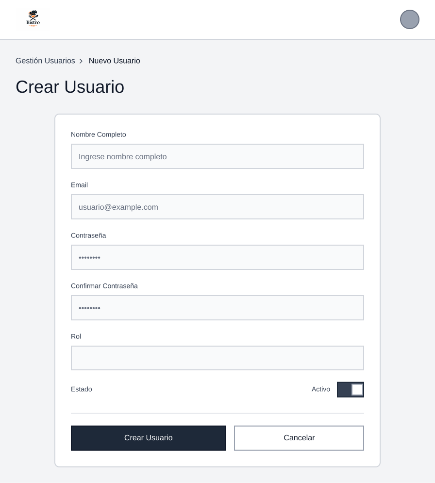
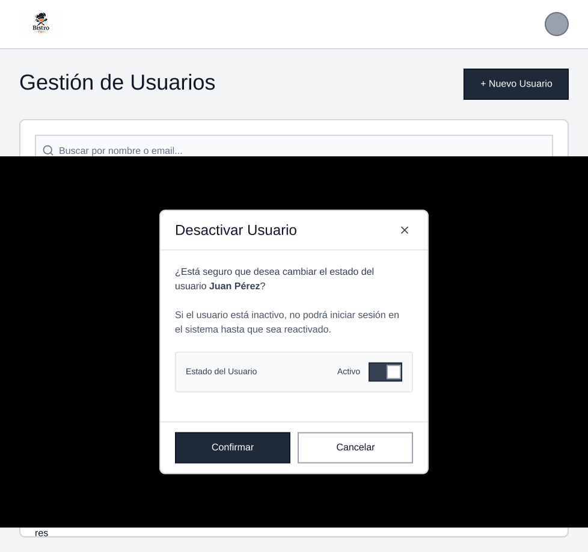

Listado de Usuarios: muestra una tabla con todos los usuarios registrados, incluyendo nombre, email, rol, estado y fecha de alta;
incluye buscador, filtros por rol y estado, y botón para crear un nuevo usuario.

Detalle de Usuario: vista individual con la información completa del usuario: datos personales, rol, estado, fecha de registro y último acceso,
junto con opciones para editar o desactivar.

Crear Usuario: formulario para registrar un nuevo usuario con campos de nombre, email, contraseña, rol y estado.
Incluye validaciones y botón para confirmar la creación.

Editar Usuario: formulario similar al de creación, pero con los datos ya cargados, permitiendo modificar información,
cambiar el rol o actualizar el estado.

Desactivar Usuario: panel de confirmación donde se informa que el usuario no podrá iniciar sesión.
Permite cambiar su estado a inactivo sin eliminar sus datos del sistema.

Realizar pedido: Se muestra el boceto en la que el usuario decide si el pedido es a para llevar o tomar en el local

Pedido para tomar en el local: Se muestra boceto donde estan los productos que se pueden pedir para tomar en el local

Pedido para llevar: Se muestra boceto donde estan los productos que se pueden pedir para llevar

Carrito de la compra vacío: Boceto para cuando el usuario no ha seleccionado ningun producto

Carrito de la compra con productos: Boceto para el carrito de la compra con los productos seleccionados por el usuario

Perfil del usuario: Boceto para historial de pedidos del usuario

Gestión de pedidos / camarero: Boceto para la gestión de pedidos por parte del camarero

Gestión de pedidos / gerente: Boceto con la información de pedidos para el panel del gerente